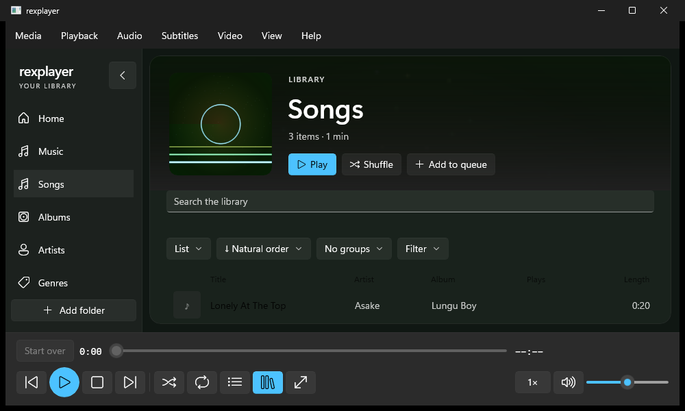
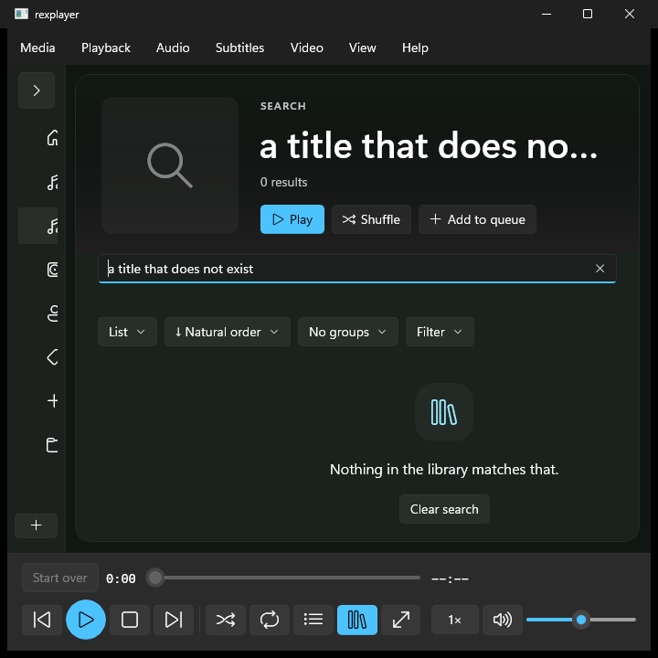
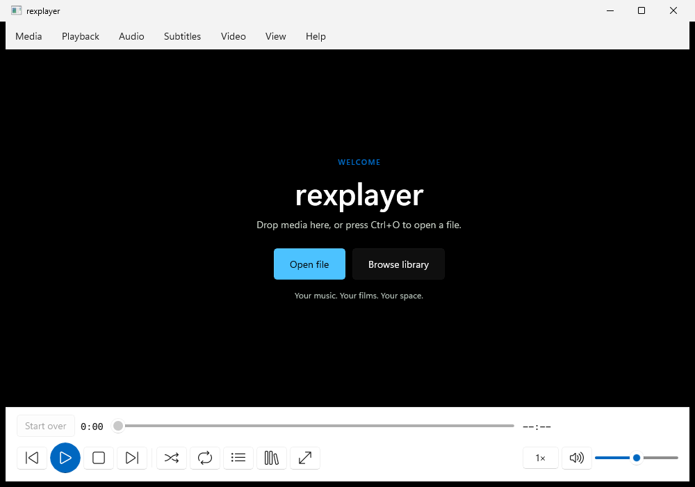
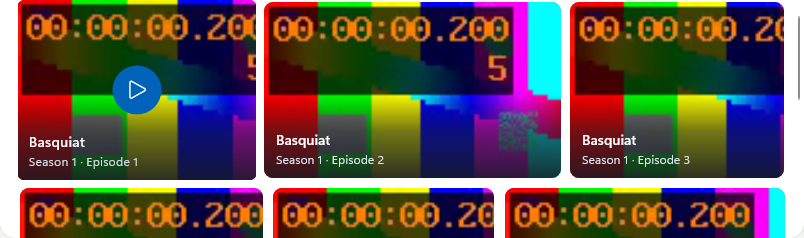
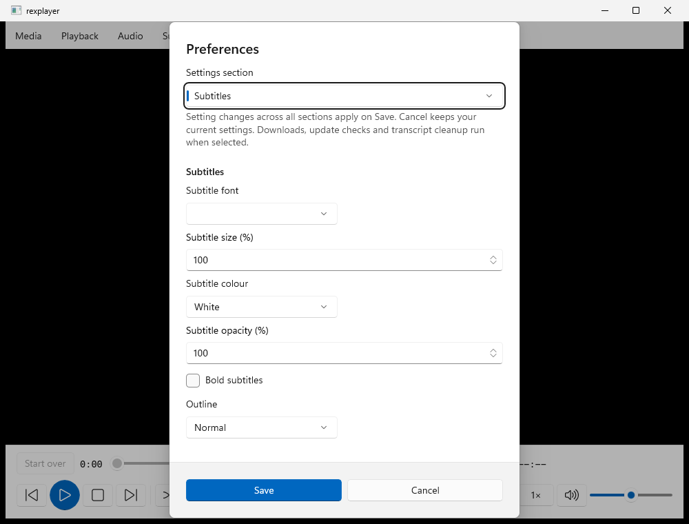
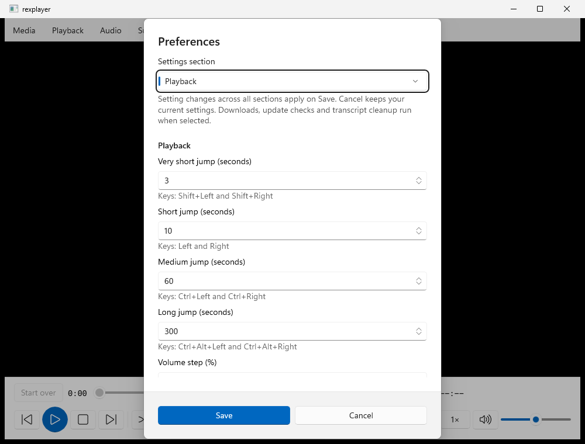

Made for every medium
Albums, artists, films, TV shows, podcasts, audiobooks, recordings and pictures each receive their own useful views and actions.
Your library · your computer
rexplayer turns the media already on your computer into a library made for music, films, shows, podcasts, audiobooks, recordings and pictures, then plays each one with controls that fit.

Inside the real app
Browse six captures from the Windows native UI regression tests: library, search, welcome, TV, subtitle settings and playback settings. Media shown in the tests is synthetic sample content, not finalized release imagery. The separate macOS interface differs and is not represented by these Windows screenshots.





These genuine Windows interface captures come from automated UI tests with example content, not curated screenshots from a finalized release. Compare supported capabilities on each platform.
Walk through six verified native test captures. These views use sample data and do not imply that the Mac interface has identical features.
Step 1 of 6
A library with memory
Music feels like music. A show opens into seasons and episodes. A book keeps its chapters, author and listening speed. Search, filters, layouts and your exact place survive every trip into details and back.
What you are seeing
These images are from the Windows native application's screenshot tests. Their layouts are produced by the real app, but the TV artwork is synthetic regression-test data, not release media. The native Mac application has its own interface and currently differs in available features.
View Windows and Mac feature status →Albums, artists, films, TV shows, podcasts, audiobooks, recordings and pictures each receive their own useful views and actions.
Optional lookups add covers, cast, episode facts, descriptions and trailers. Local files always work without them.
Folder changes are batched during large downloads. New files appear without rebuilding the whole library for every write.
Back returns to the same view, query, selection and scroll position. The sidebar collapses when you want more room.
Two native applications
rexplayer runs natively on Windows and macOS. The shared playback engine is the same, while the Windows interface currently supports more library, visual and caption tools. We are actively improving the Mac experience. Check the platform parity ledger for feature-by-feature status before downloading.
Playback that adapts
Video keeps the picture central. Music gives artwork and context room to breathe. Spoken audio foregrounds chapters and progress. Minimal mode keeps essential controls close without surrounding noise.
Play common video, audio and picture formats, subtitles, playlists and media that is still downloading.
Use speed control, equaliser, visualisations, bookmarks, snapshots, sleep timer and shortcuts you choose.
Load subtitle files, adjust their timing, or transcribe speech locally with an optional model you choose to download.
Private by design
rexplayer has no account, telemetry or analytics. Library data, settings, resume points and fetched metadata stay on your computer. Online metadata is optional, off by default and controlled separately for music, movies and television.
Download
The main button detects Windows or Mac. A universal Mac build supports Apple silicon and Intel; architecture-specific builds remain available when you prefer them.
64-bit installer · no administrator prompt
Download for WindowsmacOS 12 Monterey or later · universal app
Download for MacRun the installer. If Windows warns that the unsigned app is unrecognised, choose More info, then Run anyway.
Open the zip and move rexplayer to Applications. On Sequoia, open Privacy & Security and choose Open Anyway the first time. Mac installation guide
Every release includes checksums and portable builds on the latest release page.
For power users
The command line probes, plays and captures media. Add --json for one stable document that scripts and agents can read.
rexplay play song.wavQuestions
Use the universal Mac download on macOS 12 or later. It runs natively on Apple silicon and Intel. The separate builds are available for smaller downloads.
The app is not signed with an Apple Developer ID yet. On macOS 15 Sequoia, try opening it once, then use System Settings, Privacy & Security, Open Anyway. The Mac guide gives each step.
No. It collects no telemetry and needs no account. Optional metadata lookups run only for the categories you enable.
The shared engine, library and core playback run on both. The platform parity page lists the remaining differences clearly.